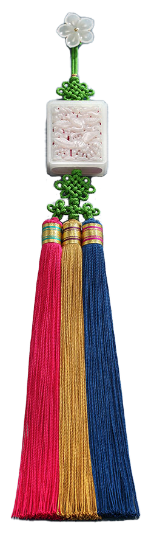

매듭장
직물 위에 얇은 금박을 이용해 다양한 문양을 찍어내는 기술

연원
우리 전통공예의 한 분야인 매듭이 언제 어디에서 유래된 것인지를 정확히 밝히기는 쉽지 않다. 다만, 우리나라의 매듭과 술 장식이 중국과의 빈번한 교류로 중국의 영향을 받았다고 짐작된다. 또 우리나라의 매듭은 일본에 영향을 주었다고 추정된다.
사용재료
명주실, 모시실, 닥나무실, 삼베실, 털실 등이 쓰인다.
특징
중국의 매듭은 종류가 다양하고 화려하다는 것이 특징이고, 일본은 매듭 자체의 장식성보다는 끈의 기능에 중점을 두었다. 이와 달리 우리나라의 전통매듭은 단색의 끈목을 이용하여 모양을 맺고 아래에 술을 달아 비례미와 율동미를 추구한 것이 특징이다.
전승자
| 보유구분 | 이름 | 성별 | 기예능 | 지역 | 인정일 |
|---|---|---|---|---|---|
| 보유자 | 정봉섭(程鳳燮) | 여 | 매듭 | 경기 | 2006-11-16 |
| 보유자 | 김혜순(金惠淳) | 여 | 매듭 | 경기 | 2017-12-29 |
| 전승교육사 | 박선경(朴仙暻) | 여 | 매듭 | 경기 | 1993-08-02 |
소재지
경기도